z<- rcauchy(1000)
#plot
hist(z,100)
# mean
mean(z)
# five number summary
summary(z)
0.229996820485311
Min. 1st Qu. Median Mean 3rd Qu. Max.
-126.35498 -0.92926 -0.00312 0.23000 1.06256 134.79144 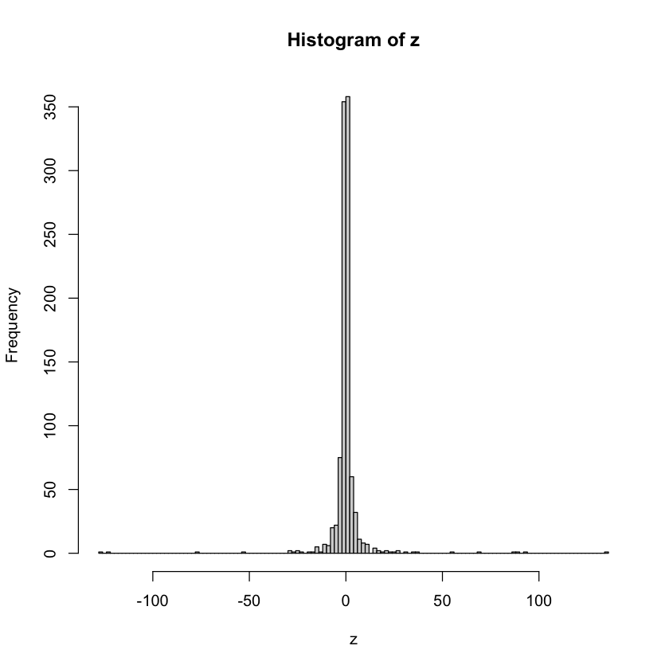
Make a sample from a Cauchy distribution and compute the sample mean and median.
rcauchy is an R function generating random numbers following the Cauchy distribution, characterized by heavy tails and undefined variance.
rcauchy(n, location = 0, scale = 1)z<- rcauchy(1000)
#plot
hist(z,100)
# mean
mean(z)
# five number summary
summary(z) Min. 1st Qu. Median Mean 3rd Qu. Max.
-126.35498 -0.92926 -0.00312 0.23000 1.06256 134.79144 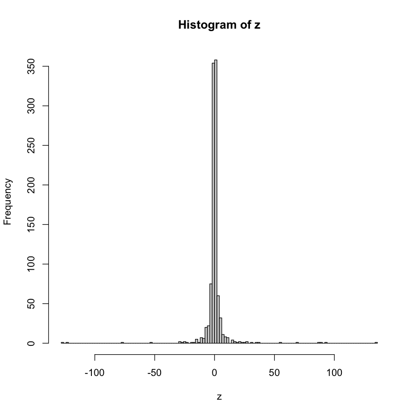
# change center and width (scale)
y<- rnorm(1000,3,.5)
#plot
hist(y,100)
# mean
mean(y)
# five number summary
summary(y) Min. 1st Qu. Median Mean 3rd Qu. Max.
1.083 2.636 2.988 2.979 3.307 4.322 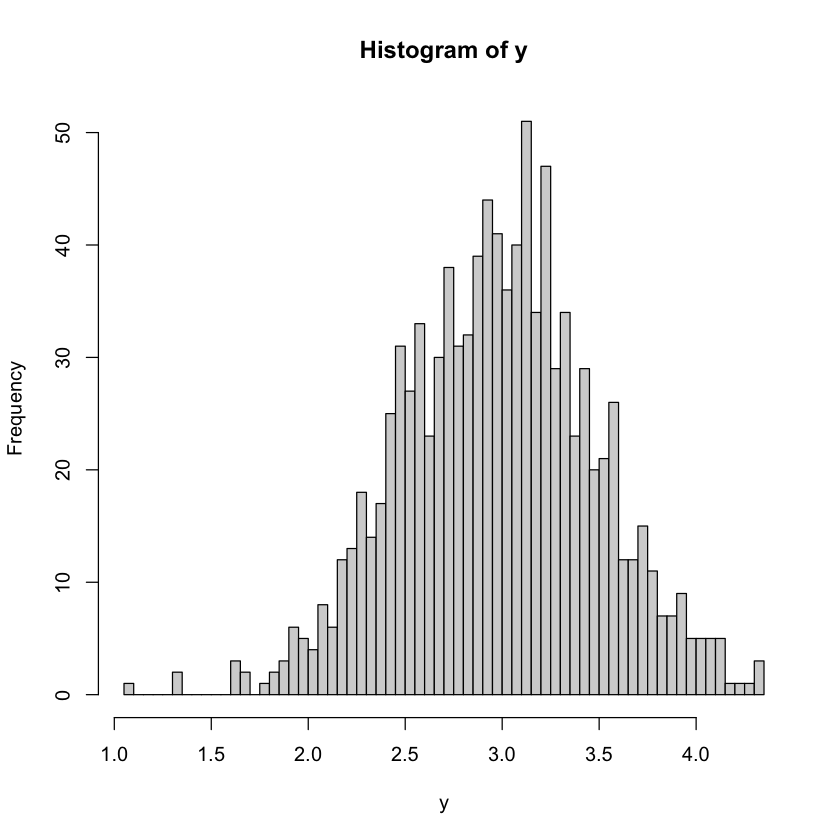
Make many means and medians.
x.1 <- replicate(1000,mean(rcauchy(10000)))
x.2 <- replicate(1000, median(rcauchy(10000)))
summary(x.1) #summary of mean
summary(x.2) #summary of median Min. 1st Qu. Median Mean 3rd Qu. Max.
-241.192 -0.972 0.101 15.015 1.099 15189.575 Min. 1st Qu. Median Mean 3rd Qu. Max.
-0.0512579 -0.0108832 -0.0012841 -0.0006719 0.0103552 0.0544952 Maybe the sample size is too small for computing the mean ?
Plot the ecdf of a suitable sample.
plot.ecdf(rcauchy(1000))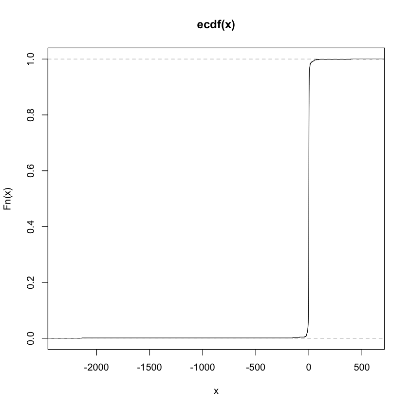
Standard deviation of a Cauchy rv DOES NOT EXIST
boxplot(replicate(1000, sd(rcauchy(100))))n = 30
p = .4
sum((0:n)^2*dbinom(0:n,n,p)) # E(X^2) = sum(x^2 * P(X=x))
mean(rbinom(10000,n,p)^2) # E(X^2)lambda = 4
n = 50
my.mean <- sum((0:n)*dpois(0:n, lambda)) # mu =E(X)=sum(x*P(X=x))
my.mean
sum(((0:n) - my.mean)^3*dpois(0:n, lambda)) #E((X-mu)^3) = sum((x-mu)^3 * P(X=x))
mean((rpois(100000,lambda) - my.mean)^3) #E((X-mu)^3)n = 30
p = .4
sqrt(n*p*(1-p))
sd(rbinom(10000,n,p))my.mu = 1
my.sigma = 3.5
sd(rnorm(1000, my.mu, my.sigma))
sqrt(mean((rnorm(1000,my.mu, my.sigma) - my.mu)^2)) #E((X-mu)^2))The absolute moment of \(M_n\) of a probability function \(P(x)\) taken about a point \(a\) is defined by
\[ M_n=\int|x-a|^n P(x) d x . \]
library(moments)
x <- rnorm(100)
## Compute the mean
moment(x) # E(X)
## Compute the 2nd centeral moment (= var)
moment(x, order=2,central=TRUE)
## Compute the 3rd absolute centeral moment
moment(x, order=3, central=TRUE, absolute=TRUE)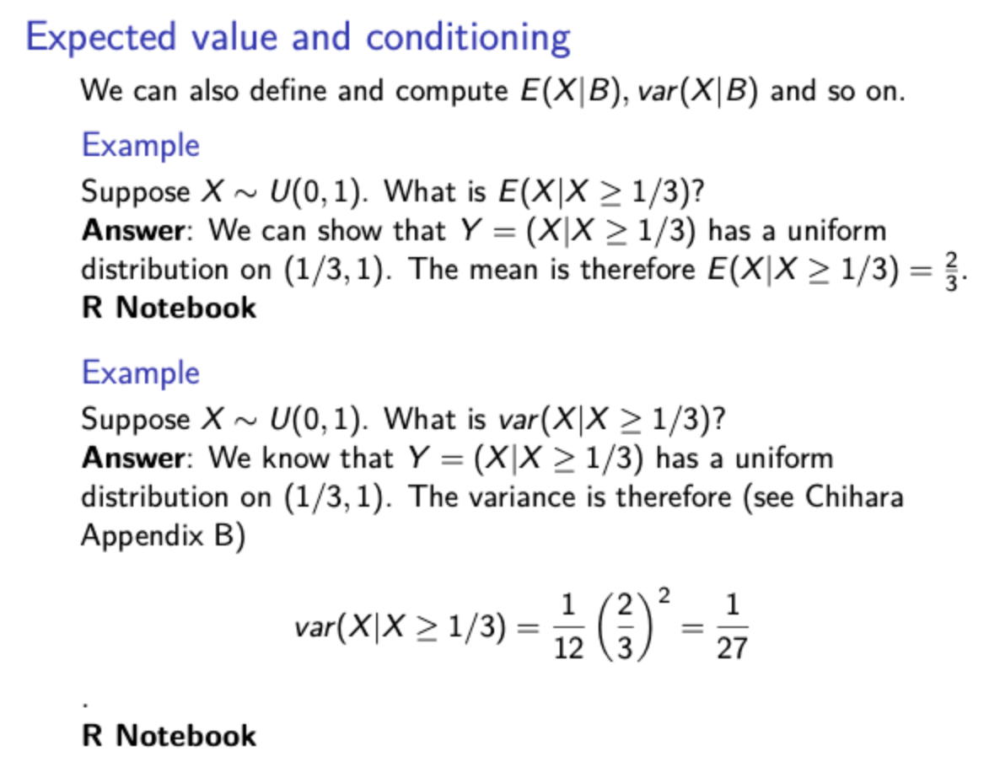
x <- runif(10000)
mean(x[x>1/3]) #by simulation
2/3 # theoroticalvar(x[x>1/3])
1/27x <- runif(1000)
y <- x[x>(1/3)]plot.ecdf(x)
plot.ecdf(y)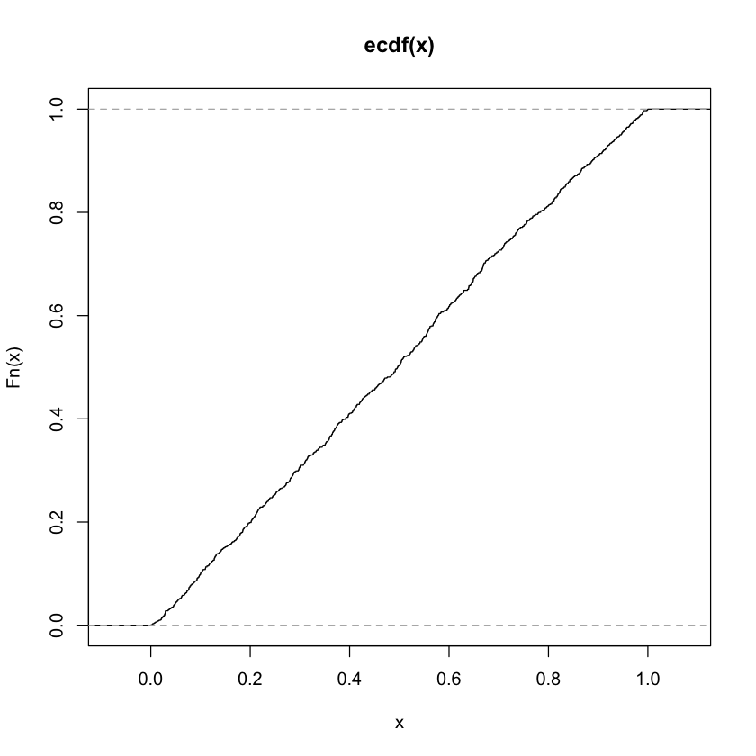
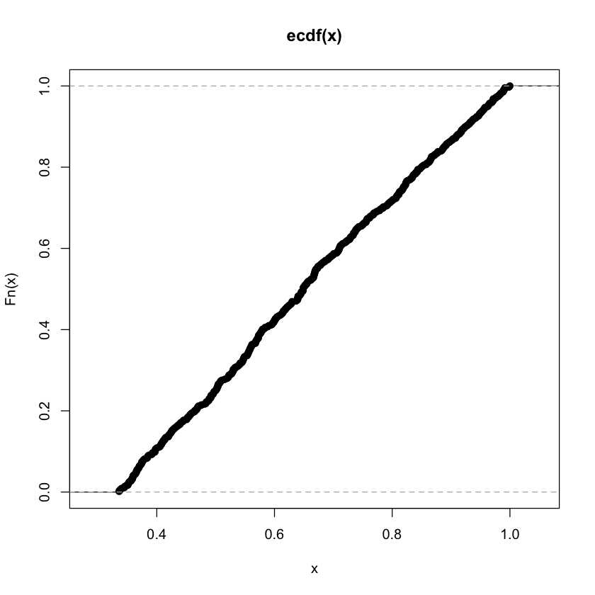
Let \(X.0 \sim U(0,3)\), \(X.1 \sim Poisson(4)\), and let \(X = X.0 + X.1\)
Make an empirical cdf of \(X\)
Make an empirical cdf of \(X|X < 8\) in the same plot
Make an empirical cdf of \(X.1|X<8\)
N = 10000
X.0 <- runif(N,0,3)
X.1 <- rpois(N,4)
X <- X.0 + X.1plot.ecdf(X)
X.2 <- X[X<8]
mycdf = ecdf(X.2)
t <- seq(0,10,by = .01)
lines(t,mycdf(t), col = 2)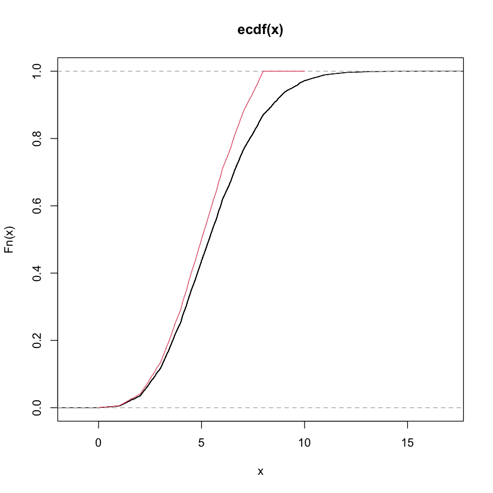
plot.ecdf(X.1[X<8])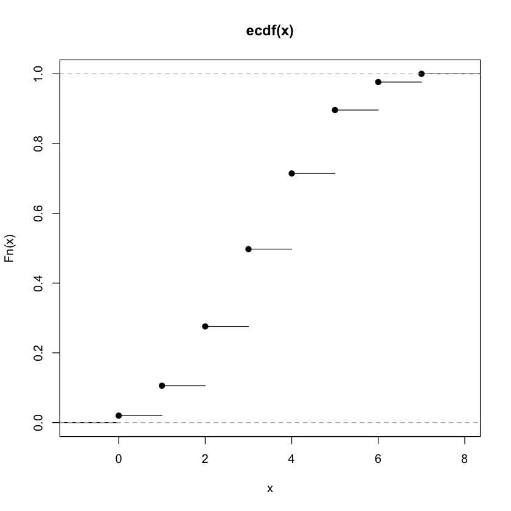
\(X1 > 0\), \(X2 > 0\), \(X1 + X2 < 1\), uniform density = 2
N = 10000 # number of initial simulation
set.seed(101)
mydf.0 <- data.frame(X1 = runif(N), X2 = runif(N))
mydf.0 <- mydf.0[rowSums(mydf.0) < 1,]
head(mydf.0)
plot(mydf.0, pch = 46)| X1 | X2 | |
|---|---|---|
| <dbl> | <dbl> | |
| 2 | 0.04382482 | 0.55931317 |
| 5 | 0.24985572 | 0.37856509 |
| 8 | 0.33346714 | 0.52437539 |
| 12 | 0.70687474 | 0.02394005 |
| 15 | 0.45512059 | 0.06166735 |
| 19 | 0.41166683 | 0.15480003 |
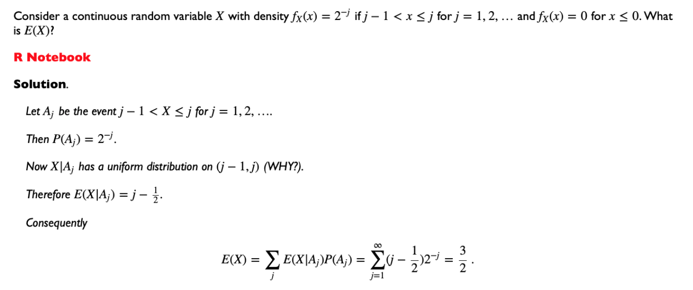
_Because geometric p.m.f \(=p(1-p)^{x-1}=(1/2)(1/2)^{j-1}=(1/2)^j\)
n = 100000
A.1 <- rgeom(n,.5)
table(A.1)A.1
0 1 2 3 4 5 6 7 8 9 10 11 12
49857 25097 12570 6243 3165 1507 800 378 202 78 48 28 12
13 14 15 16 17
6 2 2 3 2 X.5 <- runif(n, min = A.1, max = A.1+1)
hist(X.5, prob = T, breaks =0:20)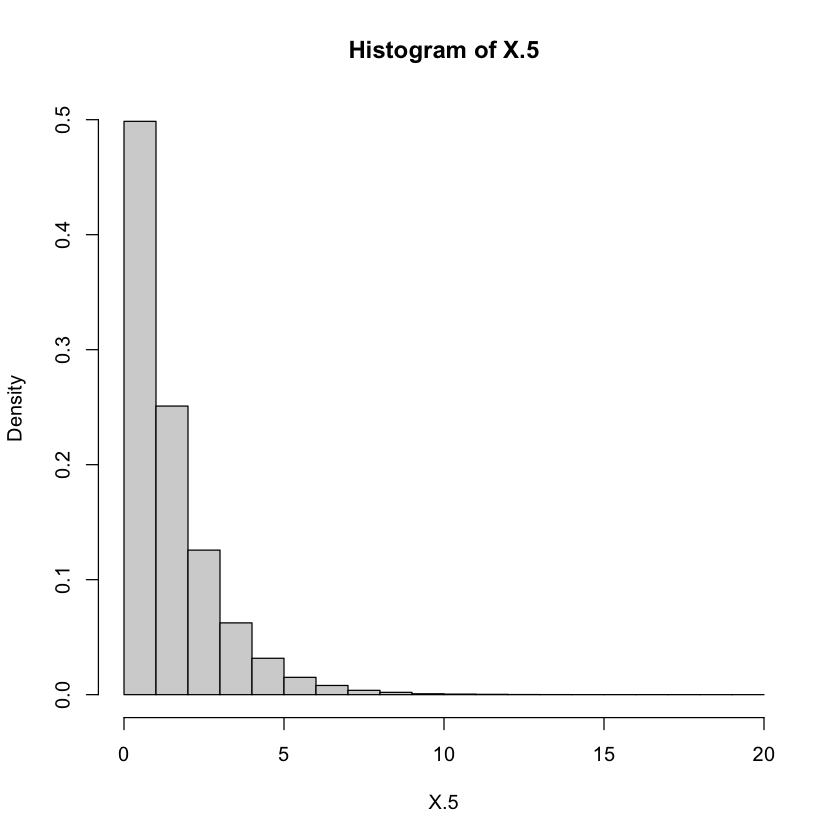
mean(X.5)
3/2Suppose \((X,Y)\) have the joint pmf
\[ f_{XY}(1,1)= .1, \quad f_{XY}(1,2) = .2, \quad f_{XY}(2,1) = .1, \quad f_{XY}(2,2) = .6, \]
Find the expectations of \(X\) and \(Y\) \[ E(X) = 1.7, \quad E(Y) = 1.8 \]
Find the conditional distributions of \(X\), conditioned on the possible values \(y\) of \(Y\):
\[ \begin{aligned} f_{X|Y}(1|Y=1) &= .5, \quad f_{X|Y}(2|Y=1) = .5\\ f_{X|Y}(1|Y=2) &= .25, \quad f_{X|Y}(2|Y=2) = .75\\ \end{aligned} \]
__Conditional expectations_
\[ E(X|Y=1) = 1.5, E(X|Y=2) = 1.75 \] Formula for \(E(X|Y)\)
\[ E(X|Y) = \begin{cases} 1.5 \quad \text{if} \; Y=1 \\ 1.75 \quad \text{if} \; Y=2 \end{cases} \]
Let \((U, V)\) be independent random variables, each with uniform distribution on \((0,1)\).
The joint density is
\[ f_{U V}(u, v)=\left\{\begin{array}{cc} 1 & (0<u, v<1) \\ 0 & \text { otherwise } \end{array}\right. \]
Let \(X=\min (U, V)\) and \(Y=\max (U, V)\). One can show that the joint density of \((X, Y)\) is
\[ f_{X Y}(x, y)=\left\{\begin{array}{cc} 2 & (0<x \leq y<1) \\ 0 & \text { otherwise } \end{array}\right. \]
mydf.0 = data.frame(U = runif(10000), V = runif(10000))
plot(mydf.0,cex = .1)
x = sapply(1:10000, function(j){min(mydf.0[j,])})
y = sapply(1:10000, function(j){max(mydf.0[j,])})
# Can also be done with apply()
mydf.1 = data.frame(x =x, y = y)
plot(mydf.1,pch = 1,cex = .1)Marginal density of \(X\) : For \(0<x<1\)
\[ f_X(x)=\int_0^1 f_{X Y}(x, y) d y=\int_x^1 2 d y=2-2 x \]
Marginal density of \(y\) : For \(0<y<1\)
\[ f_Y(y)=\int_0^1 f_{X Y}(x, y) d x=\int_0^y 2 d y=2 y \]
hist(mydf.1$x, prob = T)
abline(a = 2, b = -2, col = 2) 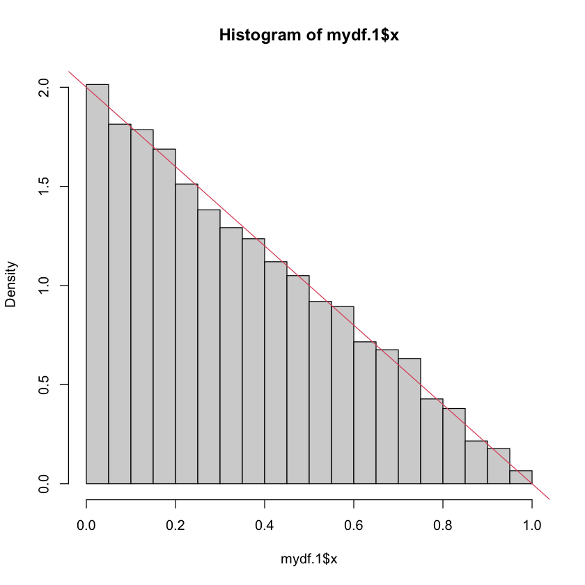
It shows the straight-line shape that is predicted by theory, $ 2-2x$
hist(mydf.1$y, prob = T)
abline(a = 0, b = 2, col = 2) 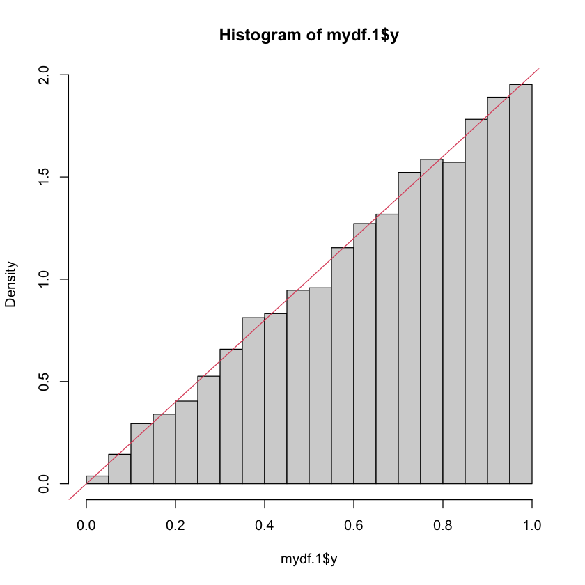